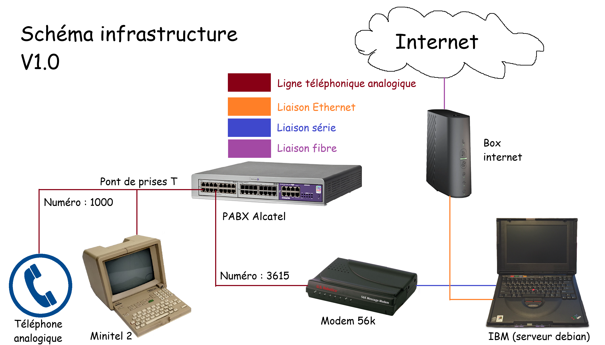

Pendant les vacances d’été 2025, je me suis plongé dans le monde merveilleux de la téléphonie analogique. Entre les modems, les connexions 56k et les BBS, j’ai eu l’idée quelque peu saugrenue d’acheter un Minitel. Vous savez, cet écran glorifié qui pèse presque 5 kilos et qui a plus de 50 ans… A une époque, c’était la pointe de la technologie française (oui oui française), mais France Télécom a débranché les derniers services en 2012, faute d’utilisateurs.
Alors pourquoi acheter un Minitel en 2025 si plus rien ne fonctionne depuis plus de 10 ans ?
Tout simplement parce que des passionné.es ont refusé de laisser disparaître ce qui était jadis le fleuron de la technologie française.
L’exemple le plus connu est certainement Minipavi (https://www.minipavi.fr ), joignable soit par Internet si on ne possède pas de Minitel, soit par téléphone.
J’avais initialement décidé d’en acheter un pour accéder à ces services restaurés, ce qui est sympathique pendant 10 minutes mais on en fait malheureusement vite le tour :(.
Cependant, comme je possèdais déjà un modem 56k, je me suis lancé le défi de réaliser un serveur Minitel de presque zéro. Je dis presque zéro car les pages sont créées via Miedit (https://minitel.cquest.org ), mais le reste est fait à la main avec mes petites mains :).
Avant de me lancer dans ce (gros) projet, il était primordial d’établir un cahier des charges des fonctionnalités que je souhaitais avoir sur ce serveur: j’assumais le rôle du client ainsi que du fournisseur en même temps.
Dans ce serveur, je voulais:
.json.Ce cahier des charges est évidemment temporaire, et si j’ai une nouvelle idée qui pourrait être intéressante à ajouter, je l’ajouterais dedans.
J’ai réalisé un (magnifique) schéma réseau de l’infrastructure a implémenter :
 Figure 1 : Schéma de l’infrastructure à réaliser
J’ai également pour objectif de rendre public le serveur dans un futur plus ou moins proche. Je remplacerais alors le PABX par un convertisseur analogique vers VoIP et je payerais alors une ligne par exemple chez OVH.
Après la phase de conception, il est temps de réaliser le serveur ! Je passerais les détails de dépannage de Debian sur le vieux matériel, et je me concentre sur la partie développement pure et dure.
En effet, je n’ai pas trouvé de serveur minitel “à jour” pour Linux. Les seuls disponibles sont sur DOS ou sur Windows 98/XP, ce qui est bien trop vieux. J’ai donc décidé de programmer mon propre serveur. J’ai choisi le langage Rust, permettant une gestion de la mémoire sécurisée, en lien avec mon parcours Cybersécurité.
Le dépôt Github est disponible à cette adresse : https://github.com/corslyn/minitel-server
Le principal “problème” de Rust est sa complexité en raison de la sécurité de la mémoire, c’est pour cette raison que j’ai décidé de développer mon serveur dans ce langage : pour développer mes compétences en programmation.